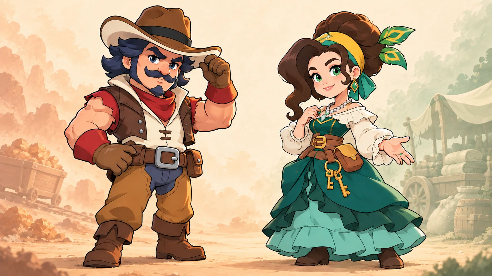

効果が30分続く場合、Lv1は1万5,000、Lv10は15万銅鉱。
500×30分と5,000×30分の差。イベント外の稼働は未確認。追加マスターのイスノールとアイナは、得意なイベントが違います。この記事ではスキルの取得時点・中間・最大値を比べ、同じプレイ量ならどのくらい差が出るかを計算します。
迷ったら、イスノールから。
エタニティーズリーチを遊ぶ人向け。隊商を毎日使い切るならアイナを先に選びます。

イスノール 探検・銅鉱アイナ 隊商・交易
以下の細かな数値は、非公式データベースKingshot OptimizerとKingshot Masteryで一致しています。スキル表の数値はゲーム内表示による照合が未完了です。スキル名の日本語は読みやすさのための仮訳で、正式名称ではありません。掲載値や解放条件は自分の王国の画面を優先してください。
数字で見る、2人の伸び幅
同じスキルのLv1・Lv5・最大値を比べています。棒の長さは各スキル内の最大値を100%とした目安です。
イスノール銅鉱獲得／分
最大で10倍。発動時間が同じなら差が広がります。
アイナ成功襲撃で貨物を1個追加する確率
成功した襲撃ごとの追加報酬が確定になります。
+5,000 → +50,000イスノールの出撃容量
12回 → 4回アイナの伝説隊商保証までの護送回数
出典は末尾に記載。銅鉱の発動条件、襲撃の成功率、隊商保証のカウント仕様は計算例で明示します。
イスノール：全スキルの数値
対象はエタニティーズリーチです。通常PvPや熊討伐への効果として扱わないでください。
⛏️ 全スキルの数値を開くLv1・Lv5・最大を比較
| スキルと効果 | 解放 | Lv1 | Lv5 | 最大 |
|---|---|---|---|---|
| 🧭 Old Hand （仮訳：古参の知恵） イベント内の致死力・HP | 初期 | 各+2% | 各+12% | Lv11：各+30% |
| ⚔️ Frontier Master （仮訳：辺境の達人） 守衛撃破時の技能XP | 親密度10 | +5% | +25% | Lv10：+50% |
| 🛡️ Survival Skills （仮訳：生存術） 出撃容量／敗北後復帰時間 | 親密度20 | +5,000／6%短縮 | +25,000／30%短縮 | Lv10：+50,000／60%短縮 |
| 💠 Unexpected Benefits （仮訳：思わぬ収穫） 銅鉱20万獲得ごとのチャーム設計図 | 親密度30 | 6個 | 30個 | Lv10：60個 |
| ⛏️ Backchannels （仮訳：裏ルート） 銅鉱獲得／銅鉱20万ごとのチャームガイド | 親密度40 | 500／分・10個 | 2,500／分・50個 | Lv10：5,000／分・100個 |
Old Handは才能スキルで最大Lv11、ほかは最大Lv10。致死力やHPの表示値を勝率・DPSの増加率に換算していません。数値・解放条件：Kingshot Optimizer、Kingshot Mastery。
アイナ：全スキルの数値
対象は商人帝国の隊商です。襲撃向けの効果と護送向けの効果を分けて見ましょう。
🚚 全スキルの数値を開くLv1・Lv5・最大を比較
| スキルと効果 | 解放 | Lv1 | Lv5 | 最大 |
|---|---|---|---|---|
| 🤝 Beneficent Mogul （仮訳：慈善の大商人） 隊商の襲撃・被襲撃時の攻撃・防御 | 初期 | 各+2% | 各+12% | Lv11：各+30% |
| 🛤️ Shortcuts （仮訳：近道） 護送時間短縮／無料更新追加 | 親密度10 | 2%短縮・+1回 | 10%短縮・+1回 | Lv10：20%短縮・+3回 |
| 📦 Finder’s Keepers （仮訳：見つけた者勝ち） 襲撃成功時、貨物1個を追加獲得 | 親密度20 | 10%の確率 | 50%の確率 | Lv10：100%の確率 |
| 🔐 Delivery Drive （仮訳：護送の底力） 被襲撃時、貨物1個を回収 | 親密度30 | 5%の確率 | 25%の確率 | Lv10：50%の確率 |
| 同スキル 襲撃されない特別な報酬箱 | スキルLv6 | なし | なし | Lv6～9：1個／Lv10：2個 |
| 🚚 Trading Ace （仮訳：交易の達人） 次の伝説隊商を保証するまでの護送完了回数 | 親密度40 | 12回 | 8回 | Lv9・10：4回 |
| 同スキル 1日の隊商出発追加 | スキルLv10 | なし | なし | +1回／日 |
Beneficent Mogulは才能スキルで最大Lv11、ほかは最大Lv10。Shortcutsの無料更新はLv6～9で+2回です。数値・解放条件：Kingshot Optimizer、Kingshot Mastery。
プレイ量をそろえた計算例
銅鉱100万を獲得した場合、Lv1は30個、Lv10は300個。
20万ごとの報酬が5回発生する場合の計算。襲撃に10回成功した場合、Lv1は平均1個、Lv10は10個。
貨物の種類や価値、襲撃の成功率は含まない。保証までの護送完了回数はLv1で12回、Lv9で4回。
自然出現やカウンターの繰越条件は未確認。戦闘ステータスの「+30%」を勝率やダメージの増加率には換算できません。
育成は「次の解放点」まで考える
Lv10第1スキル
Lv20第2スキル
Lv30第3スキル
Lv40第4スキルのLv1
Lv40は最大効果の到達点ではありません。第4スキルの上位レベルには、ほかの技能を含む「全技能レベル合計」の条件があります。
📚 親密度と紋章の必要量を開く各段階までの累計
| 到達点 | アイナ：累計親密度 | アイナ：累計紋章 | イスノール：累計親密度 | イスノール：累計紋章 |
|---|---|---|---|---|
| Lv10 | 7,780 | 8 | 11,180 | 10 |
| Lv20 | 20,680 | 24 | 30,530 | 30 |
| Lv30 | 39,610 | 48 | 58,930 | 60 |
| Lv40 | 66,490 | 80 | 99,270 | 100 |
Lv40までの紋章はアイナ80、イスノール100。紋章だけで総育成費用は比較できません。数値は非公式DBに基づきます。
どちらを先に育てる？
いちばんよく遊ぶコンテンツは？
両方遊ぶなら：現在の親密度から、次に使いたいスキルを開くまでの追加素材で選びます。
情報源と確認できていない点
- Kingshot Optimizer：アイナ ／ イスノール — スキル全レベル・親密度・素材・解放条件の非公式データ。
- Kingshot Mastery：アイナ ／ イスノール — スキル数値の照合に使用した非公式データ。
- Kingshot Guideの新マスター解説 — ゲーム画面へのリンクがある攻略記事。画像そのものの視認照合は未完了。
- 公式ヘルプ：親密度 ／ マスター紋章 ／ 写本。
- 公式X告知の転載 — 2026年9月14日から王国1～1426に追加、ほかは順次展開。原投稿への直接リンクは未確認。
未確認事項は、王国ごとの現在の実装状況、正式な日本語スキル名、銅鉱獲得のイベント外稼働、伝説隊商保証のカウント仕様、報酬箱の中身と確率です。記事の数値は2026年10月6日に参照した公開データに基づきます。